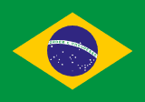
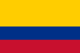
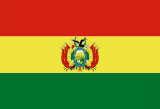
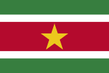
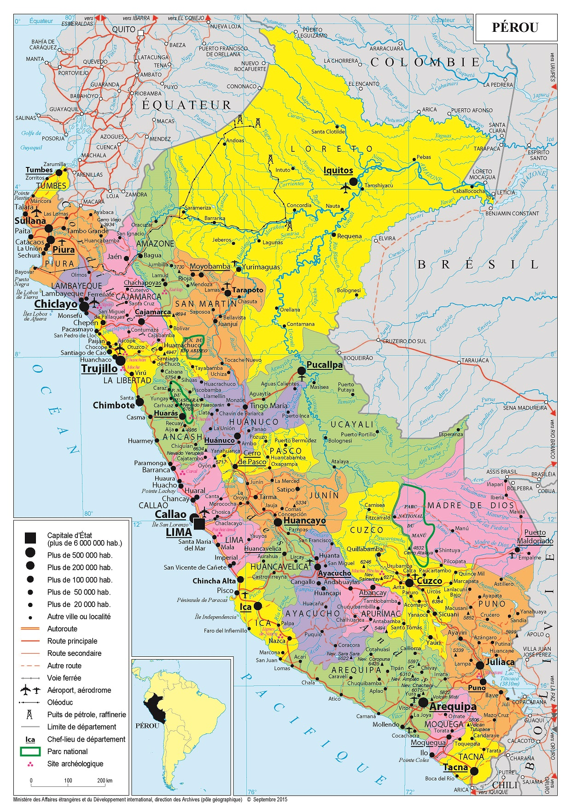
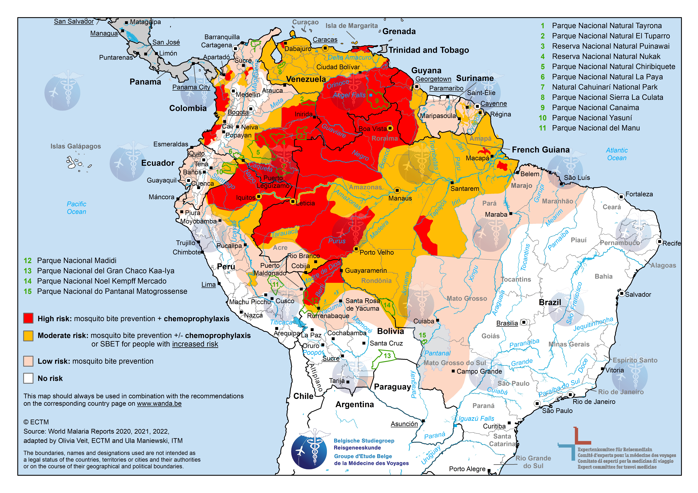

Formation 2 h · Contexte régional & enjeux pour les acteurs humanitaires
Sommaire
01
Contexte géopolitique de l'Amérique latine
Amérique du Sud, rivalité Chine–États-Unis, intégration, inégalités et climat
→
02
Crises démocratiques & instabilité
Fragilité institutionnelle, corruption, polarisation, criminalité et impacts humanitaires
→
03
Le Pérou : géopolitique et crises
Histoire politique, instabilité chronique, économie minière, sécurité et zones rouges
→
04
Géopolitique en situation
Risques, acteurs locaux, santé et ressources
→
01
Partie 01
Contexte géopolitique de l'Amérique latine
Acteurs majeurs · Influences externes · Enjeux pour l'humanitaire
01 · Contexte géopolitique
Vidéo · Dessous des cartes · ARTE
Amérique latine : une région sous les radars ?
Panorama d'ouverture : construction politique du terme, diversité des 20 pays, passage de la colonisation à l'« arrière-cour » états-unienne, voie diplomatique (BRICS) et relégation géopolitique malgré les atouts régionaux.
habitants, 33 pays, le Brésil en compte pour un tiers
≈ 7 T USD
PIB combiné, 3ᵉ économie mondiale si unifiée
20 M km²
de superficie : Andes, Amazonie, Caraïbes, Patagonie
33
pays souverains du Mexique à l'Argentine
Inégalités structurelles
La région du monde la plus inégalitaire après l'Afrique subsaharienne : une fracture qui structure toutes les tensions sociales.
Gini ≈ 50
inégalités parmi les plus élevées au monde (≈ 35 en UE)
01 · Contexte géopolitique
L'Amérique du Sud : les acteurs régionaux
12 pays · comparaison sur 2 axes : économie · politique & géostratégie.

BRÉSIL
Le géant incontournable
215 M hab. · PIB ≈ 2 000 Md USD · ≈ 9 300 $/hab.
Économie
1er PIB d'Amérique du Sud (≈ 50 % du continent). Soja, minerai de fer, bœuf, pétrole pré-salt (Petrobras). Industrie diversifiée (aéronautique Embraer, agroalimentaire). 60 % de l'Amazonie sur son territoire. Inégalités persistantes malgré les programmes sociaux.
Politique & géostratégie
Présidentiel · centre-gauche. Lula (PT, 2023–), coalition large, Congrès fragmenté mais institutions stables. Leader du Mercosur et membre des BRICS. Diplomatie multipolaire : pivot entre Washington et Pékin. Voix majeure sur le climat et la souveraineté amazonienne. Armée la plus importante du continent.
ARGENTINE
2ᵉ économie sud-américaine
45 M hab. · PIB ≈ 640 Md USD · ≈ 14 200 $/hab.
Économie
2ᵉ PIB du continent. Inflation chronique (pic > 200 % en 2023, en baisse sous Milei). Dette FMI record. Exportations : soja, bœuf, lithium (Jujuy, 3ᵉ réserves mondiales). Gaz : Vaca Muerta (2ᵉ gisement de schiste au monde). YPF nationalisée.
Politique & géostratégie
Présidentiel · libertarien (droite). Milei (2023–), réformes austéritaires par décret, polarisation extrême. Alignement explicite sur Washington, refus des BRICS. Tensions permanentes sur les Malouines. Rapport conflictuel au Mercosur (menaces de retrait). Ressources stratégiques convoitées (lithium, gaz).

COLOMBIE
Géostratégie andine
52 M hab. · PIB ≈ 380 Md USD · ≈ 7 300 $/hab.
Économie
3ᵉ économie sud-américaine. Café, fleurs, pétrole (Ecopetrol), agriculture diversifiée. Seul pays du groupe avec accès Pacifique et Caraïbes. Économie en transition post-accords de paix (2016). Inégalités rurales persistantes.
Politique & géostratégie
Présidentiel · bascule droite dure. De la Espriella (juin 2026, 49,66 %), fin du 1er gouvernement de gauche (Petro 2022–2026). Allié historique des USA (Plan Colombie). Frontière longue et tendue avec le Venezuela. Hub du narcotrafic transnational. Partenaire global de l'OTAN (seul en Amérique latine).
CHILI
Puissance minière stable
19 M hab. · PIB ≈ 350 Md USD · ≈ 18 000 $/hab.
Économie
Cuivre nº1 mondial (≈ 25 % de l'offre). Lithium (Triangle du lithium, 2ᵉ réserves mondiales). Économie la plus diversifiée et stable du cône sud. Membre de l'OCDE. Crise sociale 2019–2020 (émeutes), reprise progressive. Fonds souverain (pensions).
Politique & géostratégie
Présidentiel · droite conservatrice. Kast (déc. 2025, 58,2 %) après Boric (2022–2025). 2 réformes constitutionnelles rejetées (2022, 2023). Accord de libre-échange USA, mais Chine = 1er partenaire commercial. Contrôle stratégique de l'accès pacifique sud (détroit de Magellan). Diplomatie minière (cuivre, lithium).
PÉROU
Géant minier instable
34 M hab. · PIB ≈ 290 Md USD · ≈ 8 500 $/hab.
Économie
60 %+ des exportations minières. Cuivre nº2 mondial, or, zinc. Vulnérabilité au cours des commodités. Port de Chancay (1,3 Md $, COSCO, nov. 2024) : nouveau hub logistique pacifique. Conflits miniers récurrents (Las Bambas, Antamina).
Politique & géostratégie
Présidentiel · instabilité extrême. 9 présidents en 10 ans (2016–2026) : Kuczynski, Vizcarra, Merino (5 j.), Sagasti, Castillo, Boluarte, Jerí, Balcázar (intérims du Congrès en 2025–2026). Keiko Fujimori élue juin 2026 (50,135 %), investiture 28 juillet, retour de la dynastie. Congrès destituant, justice instrumentalisée. Chancay = pivot chinois sur le Pacifique. Coopération militaire US. Frontières amazoniennes poreuses (Colombie, Brésil).

BOLIVIE
Ressources sans accès à la mer
12 M hab. · PIB ≈ 50 Md USD · ≈ 4 000 $/hab.
Économie
Gaz naturel (ventes Argentine/Brésil). Lithium : Salar de Uyuni, réserves parmi les 1ères mondiales (exploitation lente). Économie de la coca (culture traditionnelle et narcotrafic). PIB/hab. le plus bas du groupe. Dépendance aux cours des matières premières.
Politique & géostratégie
Présidentiel · centre-gauche (MAS). Arce (2020–) après crise 2019 (Morales/Añez). État plurinational, tensions autonomistes (Santa Cruz). Enclavée depuis la guerre du Pacifique (1879), revendique un accès à la mer. Rapprochement Chine (investissements lithium). Coca et narcotrafic transfrontalier.
URUGUAY
Modèle stable et médiateur
3,5 M hab. · PIB ≈ 80 Md USD · ≈ 23 000 $/hab.
Économie
PIB/hab. le plus élevé du groupe. Élevage, services, tech (logiciel, fintech). 97 % d'électricité renouvelable (éolien, hydro). Inflation modérée, institutions solides. Hub financier régional (Montevideo). Économie ouverte et prévisible.
Politique & géostratégie
Présidentiel · centre-droit modéré. Lacalle Pou (2020–). Alternance démocratique stable, meilleur indice démocratique de la région. Médiateur du Mercosur (entre Brésil et Argentine). FTA Chine (2023). Position neutre USA/Chine. Référence institutionnelle pour le cône sud.
ÉQUATEUR
Dollarisation et violence
18 M hab. · PIB ≈ 120 Md USD · dollar USD officiel
Économie
Dollarisation depuis 2000 (pas de banque centrale, pas de politique monétaire autonome). Pétrole (Amazonie), bananes, crevettes. Dette envers la Chine (≈ 5 Md $). Crises récurrentes : destitution Lasso en 2023. Galápagos : tourisme et biodiversité.
Politique & géostratégie
Présidentiel · centre-droit. Noboa (2023–) après destitution Lasso (2023). Violence record (≈ 40 homicides / 100k), narcotrafic, prisons sous contrôle des gangs. Frontière nord violente (Colombie : dissidents FARC). Ancienne base US (Manta, fermée 2009). État d'urgence récurrent.
VENEZUELA
Effondrement et exode
28 M hab. · PIB ≈ 100 Md USD · effondrement depuis 2014
Économie
Dépendance pétrolière (PDVSA, sanctions US/EU). Dollarisation de facto. Hyperinflation partiellement maîtrisée. Économie souterraine et corruption massives. ≈ 7,7 M de réfugiés et migrants (1ʳᵉ crise migratoire régionale).
Politique & géostratégie
Régime autoritaire · bolivarien. Maduro (contestation électorale 2024). Opposition réprimée, justice instrumentalisée. Alliance Chine–Russie (partenariat « all weather » 2023). Pétrole vers Pékin. Tension Guyana (Essequibo, référendum 2023). Porte d'entrée du narcotrafic vers les Caraïbes.
PARAGUAY
Soyeur enclavé
7 M hab. · PIB ≈ 45 Md USD · ≈ 6 500 $/hab.
Économie
Méga-exportateur de soja (3ᵉ mondial). Hydroélectricité Itaipú (50/50 avec le Brésil, 2ᵉ barrage mondial). Économie informelle massive (≈ 40 %). Corruption et contrebande (Ciudad del Este, zone tri-frontalière).
Politique & géostratégie
Présidentiel · conservateur (Colorado). Peña (2023–), même parti au pouvoir quasi sans interruption depuis 1947. Seul pays d'Amérique du Sud reconnaissant Taïwan (pas la Chine). Enclavé entre Brésil et Argentine. Zone tri-frontalière (contrebande, narcotrafic, Hezbollah présumé).
Pétrole offshore (bloc Stabroek, ExxonMobil) : croissance parmi les plus rapides au monde. Or, bauxite. Richesse récente vs pauvreté persistante à terre (≈ 40 % sous seuil). Défi de la malédiction des ressources.
Politique & géostratégie
Parlementaire · centre-gauche (PPP). Irfaan Ali (2020–), démocratie compétitive ethniquement polarisée. Litige Essequibo avec le Venezuela (référendum 2023, 95 % d'annexion revendiquée). Anglophone (CARICOM). Intérêts US (Exxon, Chevron) et Chine sur le pétrole.

SURINAME
Amazonie caribéenne
0,6 M hab. · PIB ≈ 3 Md USD · ≈ 5 000 $/hab.
Économie
Bauxite, or, pétrole offshore émergent (TotalEnergies). Héritage colonial néerlandais. Économie petite et dépendante des matières premières. Restructuration de la dette (2021). Inflation élevée (≈ 50 % en 2023).
Politique & géostratégie
Parlementaire · coalition VHP. Santokhi (2020–) après 16 ans de règne de Bouterse (condamné pour meurtres politiques). Alternance démocratique, coalition fragile. Seul pays néerlandophone d'Amérique du Sud. Côte Caraïbes, intérieur amazonien. Liens privilégiés avec l'UE et les Pays-Bas.
01 · Contexte géopolitique
Influence américaine : l'hémisphère sous tutelle
Économie extractiveTutelle géopolitique
1492
1800-1900
1823
1900
1904
1947
1900-Auj.
Auj.
Conquête métaux précieux
Monocultures export
Monroe sphère US
Compagnies United Fruit
Roosevelt big stick
Bascule Europe → US
Guerre froide coups d'État
Soft power sanctions · USMCA
Économie extractive
1492–1800
Conquête & métaux précieux
Potosí, Zacatecas, Minas Gerais : l'argent et l'or alimentent l'Europe. Système d'encomienda, traite atlantique, travail forcé des mineurs. Galeano : une mine « créée pour donner de l'argent à l'Espagne… et de l'Espagne à l'Europe ».
Économie extractive
XIXᵉ SIÈCLE
Monocultures exportatrices
Café (Brésil), caoutchouc (Amazonie), sucre (Caraïbes), guano (Pérou), salpêtre (Chili). Terres spécialisées dans l'export, rarement dans l'industrie. Économies « comprimées » au service des marchés européens puis nord-américains.
Tutelle géopolitique
1823
Doctrine Monroe
« L'Amérique aux Américains » : exclusion des puissances européennes, mais tutelle de facto des États-Unis. Naissance de l'idée d'une sphère d'influence exclusive sur le continent, dès les indépendances latino-américaines.
Économie extractive
COMPAGNIES
Grandes compagnies & dépendance
United Fruit (bananes, « républiques bananières »), Standard Oil, mines du cuivre chilien. Matières premières contre produits manufacturés importés. Division internationale du travail : l'AL fournit, le Nord transforme et revend.
Tutelle géopolitique
1904 · BIG STICK
Corollaire Roosevelt
« Parler doucement et porter un gros bâton » : canal de Panama, bases militaires, dollar diplomacy. Les compagnies nord-américaines (United Fruit, pétrole) deviennent acteurs politiques directs.
Tutelle géopolitique
GUERRE FROIDE
Coups & dictatures soutenus
Guatemala (1954, United Fruit / CIA), Chili (1973, Allende / Pinochet), Nicaragua (Contras), Plan Colombie. Lutte anticommuniste = soutien à des régimes autoritaires alignés sur Washington.
Économie extractive
CINQ MAÎTRES
De l'Europe aux États-Unis
Espagne, Portugal, Angleterre, France puis États-Unis remplacent l'Europe au XXᵉ siècle. Même logique : périphérie productrice de richesse, centre qui capte la plus-value. Indépendances politiques sans souveraineté économique.
Tutelle géopolitique
AUJOURD'HUI
Soft power & nouveaux leviers
Moins d'interventions ouvertes, mais bases militaires, sanctions (Venezuela, Cuba), USMCA, contrôle du narcotrafic et de l'immigration. Même logique hémisphérique formes différentes, rivalité avec la Chine.
« La division internationale du travail consiste en ceci : certains pays se spécialisent dans le gain et d'autres dans la perte. » Eduardo Galeano · Las venas abiertas de América Latina · 1971
01 · Contexte géopolitique
Vidéo · ARTE Décryptage
Amérique latine : avec Trump, retour de la doctrine Monroe
Comment Washington réactive une logique d'influence hémisphérique sous la présidence Trump.
Influence politique sans imposition de régime. Présence militaire limitée (le Venezuela fait exception).
01 · Contexte géopolitique
Vidéo · CNBC
Why China has its eye on Latin America
Commerce ($450 Md en 2021), investissements par pays (Brésil, Pérou, Chili…), partenariat « all weather » avec le Venezuela, Belt and Road, télécoms et station spatiale en Argentine.
La Chine, partenaire commercial · les États-Unis, investisseur et pourvoyeur de technologie. La Chine progresse, l'influence américaine décline.
COMPÉTITION GÉOPOLITIQUE
RCEP vs USMCA (intégration régionale). Taiwan, sanctions russo-européennes, alignements diplomatiques.
Un choix difficile pour l'AL
Dépendance commerciale à la Chine vs valeurs démocratiques occidentales. Cas Argentine : Milei promit d'ignorer la Chine… avant de collaborer.
01 · Contexte géopolitique
Vidéo · Analyse géopolitique
The Hidden Costs of China's Influence in Latin America and the Caribbean
Complément à la rivalité Chine–États-Unis : engagements économiques, diplomatiques et sécuritaires de Pékin en ALC et leur lien possible avec le recul démocratique observé dans la région.
De l'URSS à la guerre d'Ukraine : influence secondaire sur le plan économique, mais réelle sur le plan militaire et symbolique dans quelques pays alliés une voix alternative aux puissances occidentales, sans le poids économique de la Chine.
1959–62
CUBA · GUERRE FROIDE
Révolution, alliance soviétique, crise des missiles
Après 1959, Cuba devient l'avant-poste soviétique en Amérique latine. Crise des missiles (1962) : pic de la confrontation Est–Ouest sur le continent. Soutien aux Sandinistas (Nicaragua, 1980s), intérêt pour le Chili d'Allende. L'AL devient un théâtre de rivalité: armes, espionnage...
1991
EFFONDREMENT · RETRAIT
Fin de l'URSS · quasi-retrait de la région
La fin de l'URSS coupe les aides massives à Cuba et réduit la présence militaire. Années 1990 : Moscou se concentre sur l'Europe et l'Asie centrale. L'AL bascule vers le consensus de Washington (Plan Colombie, ALENA, ouverture commerciale).
2000–2014
Retour sous Poutine
Chávez ouvre la voie : Venezuela achète armes et reçoit des conseillers russes. Renforcement des liens avec Cuba et Nicaragua (Ortega). Diplomatie BRICS, ventes d'armes, nucléaire en Argentine (Rosatom). Narratif multipolaire : contrepoids à l'hégémonie américaine.
PRÉSENCE MILITAIRE
Venezuela · Cuba · Nicaragua
Entraînement, systèmes antiaériens, exercices conjoints. Présence discutée de Wagner / conseillers au Venezuela. Pas de bases permanentes comparables aux USA, mais un ancrage sécuritaire dans les régimes anti-occidentaux.
≈ 12 Md $
2022–AUJOURD'HUI · ÉCHANGES
Guerre d'Ukraine & influence hybride
Échanges Russie–ALC (2021) : ≈ 12 Md $ contre ≈ 450 Md $ pour la Chine–ALC. Poids économique marginal, mais rôle de voix alternative aux sanctions occidentales. Votes ONU mitigés (Brésil, Mexique, Argentine). Cuba, Venezuela, Nicaragua alignés sur Moscou.
01 · Contexte géopolitique
Vidéo · ARTE
USA et Venezuela : comprendre la doctrine Monroe
Éclairage sur le lien entre doctrine Monroe, pression américaine et crise vénézuélienne en dialogue avec la présence russe évoquée à la slide précédente.
Depuis les années 90, l'AL a multiplié les accords d'intégration unions douanières, zones de libre-échange, blocs politiques sans jamais former un marché unique comparable à l'UE ou à l'USMCA.
MERCOSUR · UNION DOUANIÈRE
Marché commun du Sud (1991)
Traité d'Asunción : Argentine, Brésil, Paraguay, Uruguay (+ Bolivie en cours d'adhésion). Tarif extérieur commun (~12–14 %) et libre circulation des biens entre membres. ≈ 250 Md$/an d'échanges intra-bloc. Accord commercial avec l'UE négocié depuis 1999, toujours non ratifié (agriculture, environnement). Tensions récurrentes : protectionnisme (automobile, sucre), rivalité Milei / Lula.
ALIANZA DEL PACÍFICO
Zone de libre-échange ouverte (2011)
Chili, Colombie, Mexique, Pérou · modèle libéral opposé au MERCOSUR. Objectif : éliminer 95 % des droits de douane, harmoniser les normes et ouvrir l'AL vers l'Asie-Pacifique. Équateur et Panama observateurs. Intégration commerciale concrète, contrairement aux blocs surtout politiques.
UNASUR / PROSUR
Intégration politique · sans accords commerciaux
UNASUR (2008) : forum politique sud-américain, pas de tarif commun · effondrement après départs (Colombie, Chili, Pérou, Argentine en 2019). PROSUR (2019) : relance conservatrice (Pinera, Duque), forum de coordination sans mécanismes commerciaux. Symbole de la fragmentation : chaque bascule électorale crée ou détruit un bloc.
ALBA
Alternative bolivarienne (2004)
Alliance Chávez / Castro : Venezuela, Cuba, Bolivie, Nicaragua, Antigua… Pas un libre-échange classique mais des échanges compensés · pétrole vénézuélien (Petrocaribe) contre médecins cubains, prêts « solidaires ». Modèle anti-libéral face au FMI. Influence en fort recul depuis l'effondrement économique vénézuélien (2014+).
USMCA · CONTRASTE
Amérique du Nord intégrée (2020)
États-Unis · Mexique · Canada · successeur de l'ALENA. Marché unique de > 800 Md$/an, chaînes de valeur intégrées (automobile, électronique, agriculture). Le Mexique est dans l'USMCA, pas dans le MERCOSUR : l'AL reste deux vitesses · nord connecté aux USA, sud fragmenté en blocs rivaux et sous-intégrés.
Lula, Petro, Castillo. Mais populisme, fragmentation et polarisation extrême.
Scrutin 2025–2026
PANORAMA · 2025–2026 · Une vague conservatrice, des scrutins au couteau
Kast (Chili), de la Espriella (Colombie), Fujimori (Pérou) : bascule régionale vers la droite dure. Écarts infimes (< 1 %), clivages maximaux, centre politique effondré. Milei (Argentine) incarne la même dynamique.
Scrutin 2025–2026
CHILI · 14 DÉC. 2025 · Kast vs Jara
58,2 % vs 41,8 % au 2ᵉ tour. Fin de l'expérience Boric (2022–2025). Droite conservatrice au pouvoir : sécurité, migration, retour du libéralisme économique.
Scrutin 2025–2026
COLOMBIE · 21 JUIN 2026 · De la Espriella vs Cepeda
49,66 % vs 48,70 %. Fin du mandat Petro (gauche historique). Outsider conservateur, alignement explicite sur Washington symbole de la bascule régionale.
Scrutin 2025–2026
PÉROU · 7 JUIN 2026 · Fujimori vs Sánchez
50,135 % vs 49,865 %, 49 641 voix d'écart. 1ʳᵉ femme élue au Pérou. Programme « poigne de fer » sur sécurité et narcotrafic, dans la continuité du clivage Castillo/Fujimori (2021).
Scrutin 2025–2026
BRÉSIL · 4 OCT. 2026 · Lula vs héritier bolsonariste
Lula (PT, 4ᵉ mandat visé) face à Flávio Bolsonaro (PL), fils de Jair Bolsonaro inéligible (condamnation 2025). 1er tour 4 oct., 2ᵉ tour 25 oct. Sondages juill. 2026 : course serrée (≈ 36–47 %).
Lula · Brésil
Bolsonaro · Brésil
Chávez · Venezuela
Morales · Bolivie
Petro · Colombie
Mujica · Uruguay
Castillo · Pérou
Fujimori · Pérou
Boric · Chili
Milei · Argentine
De la Espriella · Colombie
01 · Contexte géopolitique
Inégalités : une structure fondamentale
34 %
des revenus captés par les 10 % les plus riches
≈ 27 % / 10 %
de la population en pauvreté / en extrême pauvreté
Amérique latine
Région la plus inégalitaire après l'Afrique subsaharienne. Le Brésil, le Chili et l'Amérique centrale affichent des Gini parmi les plus élevés au monde.
Des conséquences en chaîne
Protestation sociale
Grèves et manifestations récurrentes : Chili 2019, Pérou 2022–2023, Équateur 2022.
Criminalité
Inégalités nourrissent extorsion, narcotrafic et violence urbaine dans les bidonvilles.
Migrations forcées
7 M+ de déplacés : Venezuela, Honduras, Haïti en tête de liste.
Populismes
Fracture sociale exploitable par les extrêmes, gauche et droite confondues.
01 · Contexte géopolitique
Indice de Gini par pays (1990–2020)
Au-dessus de 50
Entre 45 et 50
Entre 40 et 45
Entre 35 et 40
Entre 30 et 35
En dessous de 30
Pas de données
Aide · Lecture de la carte
Qu'est-ce que l'indice de Gini ?
Le coefficient de Gini mesure statistiquement les inégalités de revenus (parfois de patrimoine) au sein d'un pays. Plus il est élevé, plus la richesse est concentrée.
Échelle (0 à 100)
0 égalité parfaite (tous les revenus identiques)
100 inégalité maximale (un seul détient tout)
Repères utiles : Union européenne ≈ 30–35 · Amérique latine ≈ 45–55 (parmi les plus élevés au monde, avec l'Afrique subsaharienne).
Sur cette carte : plus la teinte est foncée (rouge), plus le Gini est élevé donc plus les inégalités sont marquées. Les intervalles reflètent des données agrégées 1990–2020.
01 · Contexte géopolitique
Identités et tensions
Héritage colonial
Clivages raciaux et ethniques (Indiens, Métis, Afro-descendants, Blancs) et discrimination systémique.
« Des conflits locaux complexes, pas simplement gauche contre droite. »
01 · Contexte géopolitique
Changement climatique : amplificateur de crises
Une région très vulnérable
Amazonie, Andes, Caraïbes. Sécheresses, inondations, déplacements de population et compétition pour l'eau et la terre.
Cas Pérou
Glaciers andins : ≈ −56 % de superficie en six décennies. Stress hydrique pour l'agriculture et les villes. Enjeu : l'énergie hydroélectrique.
01 · Contexte géopolitique
Vidéo · ARTE
L'Amérique latine sous la menace climatique
Complément à la slide précédente : sécheresses, inondations, recul des glaciers et vulnérabilité des populations face au changement climatique en Amérique latine.
Constitutions réécrites en boucle, pouvoirs présidentiels face à des parlements fragmentés, justice souvent instrumentalisée.
Conséquence
Des gouvernements sans légitimité, incapables d'agir durablement.
9 présidents
au Pérou en 10 ans (2016–2026) instabilité chronique
Bolivie
coup d'État 2019, renversement du président en 2025
Chili
2 réformes constitutionnelles rejetées par référendum
02 · Crises démocratiques
Corruption systémique : l'affaire Odebrecht
Odebrecht & Lava Jato
Géant brésilien du BTP, révélé en 2014 par l'opération Lava Jato (« lavage express ») : un département entier était consacré aux pots-de-vin pour acheter contrats publics et soutiens politiques. ≈788 M$ avoués dans une douzaine de pays d'AL.
Au Pérou
28 M$ versés à 4 présidents (Toledo, García, Humala, Kuczynski). García : suicide 2019 · Humala : prison 2025. Méfiance massive, vote protestataire, cycles de vengeance judiciaire.
Indice de perception de la corruption 2024 (Pérou) : 37/100 corruption très élevée, confiance en recul.
Aide · Corruption systémique
Qu'est-ce que l'affaire Odebrecht ?
Odebrecht (Brésil) était l'une des plus grandes entreprises de BTP d'Amérique latine. Révélée à partir de 2014 via l'opération Lava Jato (« lavage express »), elle disposait d'un département de pots-de-vin structuré pour acheter contrats publics et décisions politiques.
Échelle régionale : ≈ 788 M$ de corruption avoués dans une douzaine de pays Brésil, Pérou, Colombie, Mexique, Panama, République dominicaine, etc.
Pourquoi « systémique » ? La corruption ne relève pas d'un cas isolé : elle structure les marchés publics, alimente la méfiance envers l'État et nourrit le vote protestataire / extrémiste dans toute la région.
02 · Crises démocratiques
Mouvements sociaux : une amplification
2019–2024 : hausse exponentielle
Grèves générales (Chili 2019, Équateur 2022, Pérou 2022–2023), manifestations massives contre les inégalités, répression policière fréquente.
Les moteurs
Inflation et chômage post-COVID, réductions des allocations sociales, demandes de réforme agraire et minière, anti-autoritarisme.
+14 %
de grèves au Brésil en 2025
50+
universités occupées
02 · Crises démocratiques
Polarisation politique : la radicalisation
Un spectre qui s'élargit
Gauche radicale et droite autoritaire : le centre a disparu. Scrutins de juin 2026 au Pérou et en Colombie : écarts infimes, clivages maximaux.
Risque
Coups d'État, autogolpes et violence politique. Des élections au couteau referment des décennies de polarisation.
PÉROU · 07/06/2026
Fujimori vs Sánchez
50,135 % vs 49,865 %, 49 641 voix d'écart. Après le clivage Castillo/Fujimori (2021), la droite autoritaire l'emporte : 1ʳᵉ femme élue, programme « poigne de fer ».
COLOMBIE · 21/06/26
De la Espriella vs Cepeda
49,66 % vs 48,70 %. Fin du mandat Petro (gauche historique) : la polarisation gauche-radicale / droite dure bascule vers un outsider conservateur soutenu par Washington.
ARGENTINE
Milei vs kirchneristes
Milei (libertarien ultra) contre les kirchneristes (péronistes) : polarisation économique et culturelle maximale.
BRÉSIL · 04/09/262026
Lula vs Flávio Bolsonaro
Prochain grand scrutin d'AL. Lula (PT) vs l'héritier bolsonariste Jair Bolsonaro inéligible. 2ᵉ tour 25 oct. Course serrée : démocratie, Amazonie, lien Trump–Washington.
Où se situent les pays sur le spectre politique
Gauche
Droite
Source : Reuters · juin 2026
02 · Crises démocratiques
Vidéo · ARTE Info
L'Amérique latine bascule-t-elle à (l'extrême) droite ?
Après la polarisation : analyse des causes et des mécanismes de la bascule électorale vers la droite dans la région.
Cartels transnationaux, bandes locales et corruption institutionnelle : la violence structurelle qui fragilise l'action humanitaire en Amérique latine.
25 / 100k
taux moyen d'homicides (vs ≈ 6 aux USA, < 2 en UE)
+36 %
d'homicides au Pérou (2023–2024)
40 / 100k
en Équateur parmi les pires au monde
Organisations
Cartels mexicains (CJNG, Sinaloa) en expansion, bandes locales (MS-13…), triades chinoises (trafic de fentanyl).
Modus operandi
Extorsion (transports, commerce), trafic de drogue vers l'UE et le Canada, vol d'identité et fraude bancaire.
02 · Crises démocratiques
Narcotrafic : la chaîne de valeur
De la feuille de coca aux marchés européens : production, transformation, transport et revente, un écosystème criminel qui structure l'insécurité en Amérique latine.
1
2
3
4
Production Colombie / Pérou
Transformation laboratoires
Transport routes de trafic
Marché 150–200 $ / g
1 · PRODUCTION
Colombie / Pérou
≈ 410 k hectares de coca (Pérou nº1 mondial en 2024). Zones clés : VRAEM, Huallaga, Putumayo. Bandes rivales et dissidents armés se battent pour le contrôle des zones de culture et des « taxes » sur la récolte.
2 · TRANSFORMATION
Laboratoires clandestins
Cocaïne base → chlorhydrate dans la jungle ou en zone urbaine. Précurseurs chimiques importés (solvants, acides). Coupure au fentanyl pour augmenter la puissance et les marges -> risque sanitaire majeur en Europe.
3 · TRANSPORT
Routes de trafic
Venezuela : ports et aéroports peu contrôlés. Brésil : porte vers l'UE (conteneurs, go-fast). Amazonie : voies fluviales et frontières poreuses. Corridors pacifiques (Pérou, Équateur) vers l'Asie et l'Europe.
4 · MARCHÉ
150–200 $ / g en Europe
Multiplication des prix le long de la chaîne : ≈ 1 000–2 000 $/kg à la source → 50 000 $+ en gros en Europe. Blanchiment via immobilier, crypto et entreprises écran. L'UE = premier marché de consommation.
02 · Crises démocratiques
Un état de droit effondré
PÉROU
143 % d'occupation
Des gangs contrôlent certaines prisons (Lurigancho, Challapalca). Impunité massive : 95 % des crimes non punis. Délais judiciaires de plusieurs années.
ÉQUATEUR · COLOMBIE
Massacres en prison
Trafiquants contre rivaux, affrontements armés dans les établissements pénitentiaires. Justice lente, surpeuplée et souvent instrumentalisée par le crime organisé.
VENEZUELA
Prisons à 5× la capacité
Torture systématique signalée (ONU).
Tribunaux devenus instruments du régime. Détenus politiques et trafiquants entassés dans des conditions extrêmes.
02 · Crises démocratiques
Des violences particulières
LGBTQ+
Violences & backlash
Attaques lors des prides, législations restrictives (Brésil, Pérou). Backlash religieux et politique croissant contre les droits LGBTQ+.
ENFANTS
Enrôlement forcé
Enrôlement par les gangs (MS-13, Barrio 18), exploitation sexuelle commerciale, enfants-soldats en Colombie. Populations particulièrement vulnérables pour l'aide humanitaire.
GENRE
2 500+ féminicides / an
L'AL figure parmi les régions aux plus hauts
taux de féminicide. Impunité quasi-totale. Violence domestique normalisée dans de nombreuses communautés.
02 · Crises démocratiques
Migrations forcées
7 M+
réfugiés / déplacés en AL (2025)
≈ 300 k
traversées du Darién en 2024 · effondrement en 2025
ORIGINES
D'où partent les flux ?
Pérou, Colombie, Équateur (insécurité + pauvreté), Venezuela (effondrement économique), Honduras, El Salvador (gangs).
RISQUES
Sur la route
Viol, extorsion, enlèvement, mort dans les déserts et les océans, traite humaine · corridors à haut risque pour les équipes sur le terrain.
02 · Crises démocratiques
Protestation sociale : exemples récents
PÉROU 2022–2023
60+ morts
Castillo destitué (autogolpe échoué). Manifestations massives, blocages de routes, tensions ethniques Andes / Lima.
ÉQUATEUR 2022
300+ morts
Suppression des subventions au diesel, prisons en révolte. Émeutes dans les provinces amazoniennes et andines.
CHILI 2019–2020
Révolte des inégalités
Mouvement social le plus large depuis la dictature. Réforme constitutionnelle lancée puis rejetée par référendum (2022, 2023).
Chômage de 8–12 %, pas de protection
sociale, pouvoir d'achat effondré (Venezuela −90 %). Vulnérabilité accrue des ménages pauvres face aux chocs.
03
Partie 03
Le Pérou géopolitique & crises
Pays-clé pour vos opérations · Histoire chaotique · Enjeux humanitaires majeurs
03 · Le Pérou
Pérou : fiche d'identité
1,29 M km²
3e pays d'Amérique du Sud
33,7 M
habitants · croissance 1,2 % · espérance de vie 74 ans
267,6 Md $
PIB 2023 · 7 933 $/hab. (90e mondial)
1 · REPÈRES
République du Pérou
Régime présidentiel · capitale Lima · fête nationale le 28 juillet (indépendance 1821). Monnaie : sol (PEN). Langue officielle : espagnol · quechua, aymara et langues amazoniennes aussi pratiquées.
2 · GÉOGRAPHIE
Côte · Sierra · Selva
1 285 220 km² · 3ᵉ d'Amérique du Sud. Trois régions : côte (Lima), Andes (« sierra »), Amazonie (« selva », 60 % du territoire). Grandes villes : Arequipa, Trujillo, Cusco, Iquitos, Pucallpa. Frontières avec 5 pays.
3 · SOCIÉTÉ
Fractures sociales
Alphabétisation 94 % · IDH 0,60. GINI 0,47 : richesse très concentrée. Religions : catholiques ~70 %, évangéliques ~17 %. Fortes disparités ethniques et géographiques entre Lima, la côte et l'intérieur andin/amazonien.
4 · ÉCONOMIE
Matières premières & commerce
PIB 267,6 Md USD (2023) · 48e mondial. Pilier minier et agricole (demande extérieure + IDE extractifs). Membre de l'Alliance du Pacifique et de l'APEC. Accord de libre-échange avec l'UE depuis 2013. Partenaires : USA, Chine, UE.
5 · VULNÉRABILITÉS
Enjeux pour l'humanitaire
Lima concentre > 1/3 du PIB ; subsistance en sierra/selva. Informalité : 70 % des actifs pour 20 % du PIB. Déficit d'infrastructures (eau, assainissement, routes) · dépense publique parmi les plus faibles de la région. Instabilité politique depuis 2017.

03 · Le Pérou
Histoire : de l'Inca à la République
1200–1533
1533–1821
1821–1900
1900–2000
Empire Inca Tawantinsuyu
Vice-royauté Potosí · Lima
République guano · Pacifique
XXᵉ siècle Sendero · Fujimori
EMPIRE INCA
1200–1533
Tawantinsuyu : capitale Cuzco, jusqu'à 10 M de sujets. Routes Qhapaq Ñan (≈ 40 000 km), quechua lingua franca, redistribution des récoltes (mit'a).
Guerre civile Atahualpa / Huáscar (1532) affaiblit l'empire. Pizarro capture Atahualpa à Cajamarca fin de l'ère inca (1533).
CONQUÊTE ESPAGNOLE
1533–1821
Vice-royauté de Lima : mines d'argent de Potosí (Bolivie actuelle) et mercure de Huancavelica alimentent la Couronne. Système d'encomienda, hiérarchie raciale (mestizaje).
Révolte majeure de Túpac Amaru II (1780–1781), écrasée. Héritage : fracture indigène / élite créole encore visible aujourd'hui.
RÉPUBLIQUE OLIGARCHIQUE
1821–1900
Indépendance proclamée par San Martín (1821), consolidée par Bolívar (1824). Boom du guano : jusqu'à 40 % des recettes de l'État enrichit l'oligarchie côtière de Lima.
Guerre du Pacifique (1879–1884) : perte des provinces salpêtre (Tarapacá, Tacna, Arica) au profit du Chili. Pauvreté rurale andine et fracture côte / intérieur : socle des crises contemporaines.
Guerre interne : Sendero Luminoso vs armée ≈ 75 000 morts (CVR, 2003). Fujimori (1990–2000) : autogolpe 1992, fuite au Japon en 2000. Fracture sociale durable.
03 · Le Pérou
XXᵉ siècle : autoritarisme et guerre interne
Dictatures militaires
1968–1975 : Velasco Alvarado (gauche militaire) réforme agraire, nationalisation des ressources. 1975–1980 : retour instable à la démocratie.
Fujimori (1990–2000)
Élu, puis autogolpe en 1992 : dissolution du Congrès. Aide militaire US. Répression sévère.
75 000 morts dans le conflit Sendero Luminoso vs armée. Fujimori fuit en 2000, réfugié au Japon.
03 · Le Pérou
Une transition difficile (2001–2016)
2001–2006
Alejandro Toledo
Retour démocratique, mais corruption (Odebrecht). En fuite en 2023, extradé en 2024.
2006–2011
Alan García
Président à deux reprises (1985, 2006). Impliqué dans Odebrecht, suicide en prison en 2019.
2011–2016
Ollanta Humala
Nationaliste, proche de Chávez. Corruption (Odebrecht), emprisonné en 2025.
Un pattern : chaque président corrompu, puis poursuivi par le suivant.
03 · Le Pérou
2016–2022 : de la crise Odebrecht à l'autogolpe
2016–18
2018–20
nov. 20
2020–21
2021–22
7 déc. 22
PPK Odebrecht
Vizcarra COVID · destitué
Merino 60+ morts
Sagasti transitoire
Castillo instabilité
Autogolpe manqué
1 · 2016–2018
P. P. Kuczynski
Banquier néolibéral élu de justesse. Le scandale Odebrecht (pots-de-vin, financement occulte) le force à démissionner : premier président à tomber pour corruption systémique.
2 · 2018–2020
Martín Vizcarra
Vice-président qui succède à PPK. Confinement COVID parmi les plus stricts au monde. Destitué en 2020 par un Congrès hostile, lui-même accusé de corruption.
3 · NOV. 2020
Manuel Merino
Président du Congrès nommé à la hâte. Manifestations massives à Lima : 60+ morts en une semaine. Démission forcée : symbole de la colère citoyenne face aux coups de force institutionnels.
4 · 2020–2021
Francisco Sagasti
Ingénieur et technocrate, président « transitoire » chargé de restaurer la légitimité. Organise les élections d'avril 2021 dans un pays fracturé et épuisé par la pandémie.
5 · 2021–2022
Pedro Castillo
Syndicaliste rural élu de justesse face à Fujimori (50,1 %). Gouvernement instable : 5 premiers ministres en 18 mois, 3 tentatives de destitution. Face au 3ᵉ vote de vacancia, il tente un coup de force.
6 · 7 DÉCEMBRE 2022
Autogolpe manqué
Castillo dissout le Congrès et appelle à une « nouvelle constitution ». L'armée et la police refusent de le suivre : arrêté en quelques heures, emprisonné pour sédition. Dina Boluarte lui succède.
03 · Le Pérou
2022–2026 : de Boluarte à Fujimori
déc. 22
2023
2024–25
oct. 25
fév. 26
juin 26
Boluarte succession
Boluarte 60+ morts
Boluarte crime · Rolex
Jerí destitution
Jerí Chifa-gate
Fujimori élue
1 · DÉC. 2022
Dina Boluarte · succession
Vice-présidente, médecin peu expérimentée. Première femme présidente, mais rejetée par les castillistes (« usurpatrice ») et par la droite. Appelle au « calme » alors que Lima et les Andes s'embrasent : blocages de routes, exigence d'élections anticipées et libération de Castillo.
2 · 2023
Boluarte · répression & urgence
Manifestations dans 20+ provinces : Andahuaylas, Ayacucho, Puno, Cusco. 60+ morts selon la Defensoría. État d'urgence national, couvre-feu andin. Boluarte promet des élections en avril 2024 ; le Congrès bloque puis reporte. Slogan : « Boluarte, dimite ».
3 · 2024–2025
Boluarte · faillite sécuritaire
Explosion de l'insécurité : extorsions, assassinats de contractuels, narcotrafic. Scandales « Rolex » et montres de luxe non déclarées. Popularité effondrée (< 10 %). Fujimori et López Aliaga, candidats à la présidentielle, retournent leur alliance et préparent la destitution.
4 · 10 OCT. 2025
José Jerí · 7ᵉ président
Congrès destitue Boluarte par 123 voix (« incapacité morale permanente » : corruption, gestion sécuritaire). Jerí, 38 ans, président du Congrès, jure la présidence par intérim jusqu'au 28 juillet 2026. Accusations préexistantes de corruption et agressions sexuelles · jamais condamné.
5 · FÉV. 2026
Jerí destitué · « Chifa-gate »
4 mois au pouvoir : Jerí censuré (75 voix) après révélations de dîners non déclarés avec des hommes d'affaires chinois. 8ᵉ changement de chef d'État en 10 ans. José María Balázar, ancien magistrat, assure l'intérim à quelques semaines du scrutin général.
6 · JUIN 2026
Keiko Fujimori élue
1ʳᵉ tour (12–13 avril), 2ᵉ tour le 7 juin : 50,135 % vs Sánchez (49 641 voix d'écart). 4ᵉ candidature, 1ʳᵉ femme élue. Investiture le 28 juillet. Programme « poigne de fer » sur sécurité et narcotrafic · retour du clivage Castillo/Fujimori (2021).
03 · Le Pérou
Économie : la dépendance minière
10 % PIB
et 60 %+ des exportations = secteur minier
2ᵉ mondial
producteur de cuivre (12 % de l'output global)
4,7 M t
de lithium (plateau Macusani) très convoité
CUIVRE
Prix volatil
2ᵉ producteur mondial. Grandes mines : Toquepala, Antamina, Cerro Verde. L'économie péruvienne suit le cours du cuivre.
LITHIUM
Nouvelle ruée
4,7 M t sur le plateau Macusani. Batteries EV et renouvelables : rivalité géopolitique Chine / USA qui s'intensifie.
OR & ARGENT
2ᵉ producteur d'argent
Or : exploitation légale et illégale (orpaillage en Amazonie). Argent : filière industrielle et exportations majeures.
03 · Le Pérou
Économie : agriculture et pêche
AGRICULTURE
~25 % des emplois
Café, cacao, fruits exotiques (avocats, myrtilles). Petits producteurs andins très pauvres. Irrigation dépendante des glaciers.
PÊCHE
2ᵉ mondial
Après la Chine. Farine de poisson exportée. Effondrement des stocks (surpêche, El Niño, climat).
TENSION
Mine vs paysan
La mine génère des revenus mais peu d'emplois ; l'agriculture, beaucoup d'emplois mais de bas salaires. Compétition pour l'eau.
03 · Le Pérou
Crise sécuritaire : les chiffres
≈ 2 500
homicides en 2024 (≈ 6 / 100k hab.)
+36 %
d'homicides entre 2023 et 2024
20 000+
extorsions signalées (jan.–sept. 2025, +29 %)
L'extorsion, fléau nº1
Surtout le secteur des transports et le petit commerce. Enlèvements moins fréquents mais ciblés (petits entrepreneurs, transporteurs).
66 %
des Péruviens citent la criminalité comme problème nº1 (Ipsos 2025).
03 · Le Pérou
Zones rouges : où ne pas aller
VRAEM
Accès interdit
Vallée des rios Apurímac, Ene et Mantaro (Junín, Ayacucho, Huancavelica, Cusco). État d'urgence, production de coca, restes du Sendero.
Trafic, gangs, extorsion. « Zonas coloradas » à éviter la nuit.
03 · Le Pérou
Ressources naturelles & conflits
Mines vs communautés
Antamina : protestations autochtones. Toquepala : litiges eau/pollution. Orpaillage illégal en Amazonie : le mercure pollue les rivières.
Lithium : nouvelle ruée
Multinationales sur Macusani. Craintes : eau, pollution, profit peu localisé. Enjeu Chine (Tesla/batteries) vs USA.
L'eau, enjeu majeur
Glaciers −50 % depuis 1970. Mines gourmandes en eau, paysans en manque → émeutes. Lima : 10 M hab. en tension hydrique.
03 · Le Pérou
Vidéo · Documentaire
Las Huellas Del Cerrejón
Documentaire sur la plus grande mine de charbon à ciel ouvert du monde, en Colombie. Témoignages de communautés qui vivent au pied du Cerrejón : la « minería responsable » a asséché les eaux du département et plongé ses habitants dans la tristesse et le désespoir, mais ils restent unis pour défendre la terre où ils sont nés.
Visa auprès du consulat péruvien en France. Séjour > 6 mois : inscription au registre des Français établis hors de France.
AUTRES MOTIFS
Mission & travail
Mission humanitaire ou travail : vérifier les conditions spécifiques auprès du consulat péruvien avant le départ.
04 · Géopolitique en situation
Entrée / séjour : frontières & passeport
ENTRÉE AÉRIENNE
Depuis mai 2023
Plus de tampon physique (Jorge Chávez, Arequipa, Cusco, Chiclayo, Trujillo). Enregistrement TAM en ligne → cel.migraciones.gob.pe.
ENTRÉE TERRESTRE
Tampon obligatoire
Tampon physique obligatoire aux postes frontière. Insister si le bus ne s'arrête pas. Sans tampon : situation irrégulière, rétention jusqu'à 3 semaines, interdiction de retour jusqu'à 15 ans.
PERTE / VOL PASSEPORT
Laissez-passer
Laissez-passer ambassade. Transfert du cachet d'entrée via Superintendencia Nacional de Migraciones. Bus accepte copie + plainte ; avion interdit (sauf Iquitos Lima).
MINEURS (< 18 ANS)
Autorisation parentale
Autorisation de sortie notariée si un parent absent. Règles renforcées pour double nationalité péruvienne.
rapatriement sanitaire obligatoire (l'ambassade ne paie jamais)
Cliniques Lima
privées, bon niveau, paiement à l'avance
≥ 4 semaines
avant départ : consultation médecin des voyages
ASSURANCE & SOINS
Prise en charge
Hospitalisation coûteuse. Carte bancaire exigée à l'admission. Aucune prise en charge consulaire.
PHARMACIE
Médicaments
Médicaments en emballage d'origine + ordonnance DCI. Jamais acheter en rue (contrefaçons).
VACCINS DE BASE
À jour avant départ
À jour : DTCP, rougeole, etc. Compléments : fièvre jaune (Amazonie), hépatite A/B, typhoïde, rage (rural/enfants), chikungunya/dengue si séjour prolongé.
04 · Géopolitique en situation
Santé : moustiques & zones à risque
DENGUE / CHIKUNGUNYA
Épidémies déc. avr.
Été austral, nord & ouest. Pas d'anti-inflammatoires si dengue. Protection moustiques + vaccination selon avis médical.
FIÈVRE JAUNE
Amazonie & nord-ouest
Endémique moitié est + extrême nord-ouest. Vaccin ≥ 10 j avant départ. Obligatoire si sortie vers Venezuela.
PALUDISME
Zones amazoniennes
Ayacucho, Junín, Loreto, Madre de Dios, Piura, San Martín, Tumbes. Absent > 2 000 m (Cusco, Machu Picchu, Titicaca, Lima).
ZIKA & OROPOUCHE
Grossesse & prévention
Grossesse : consulter avant départ. Oropouche : pas de vaccin, protection insectes, éviter rapports non protégés.

04 · Géopolitique en situation
Santé : autres risques & prévention
MAL DES MONTAGNES
> 2 500 m
Montée ≤ 400 m/jour au-dessus de 2 500 m. Redescendre si symptômes. Déconseillé grossesse / cardiaques / enfants.